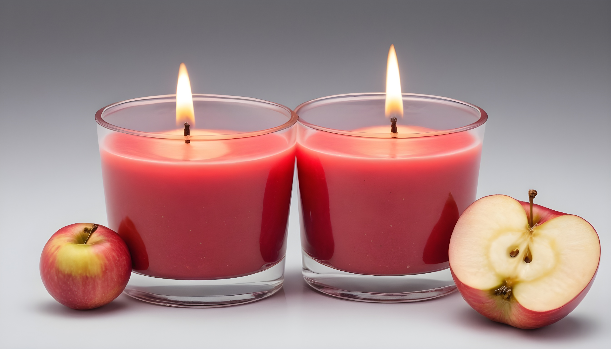
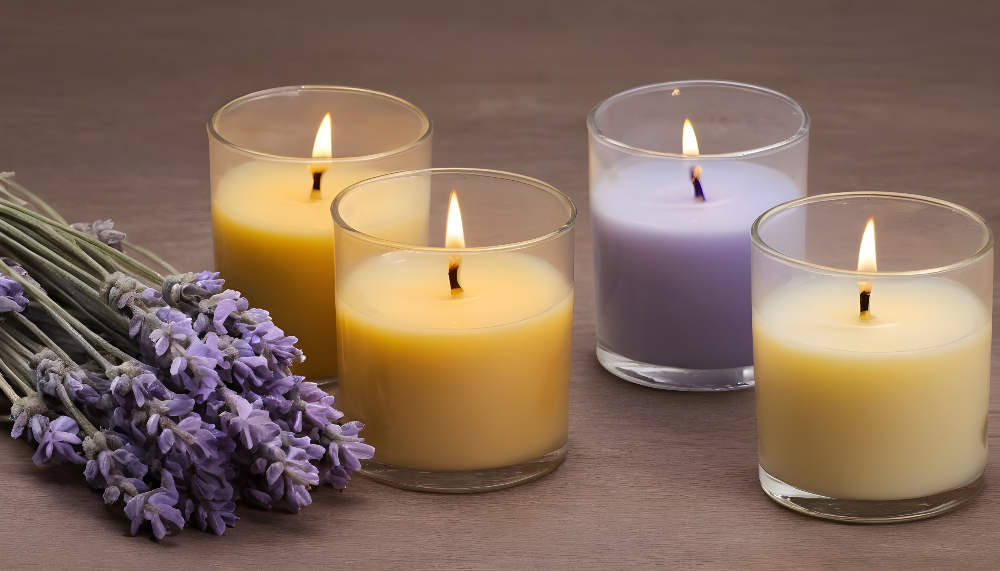
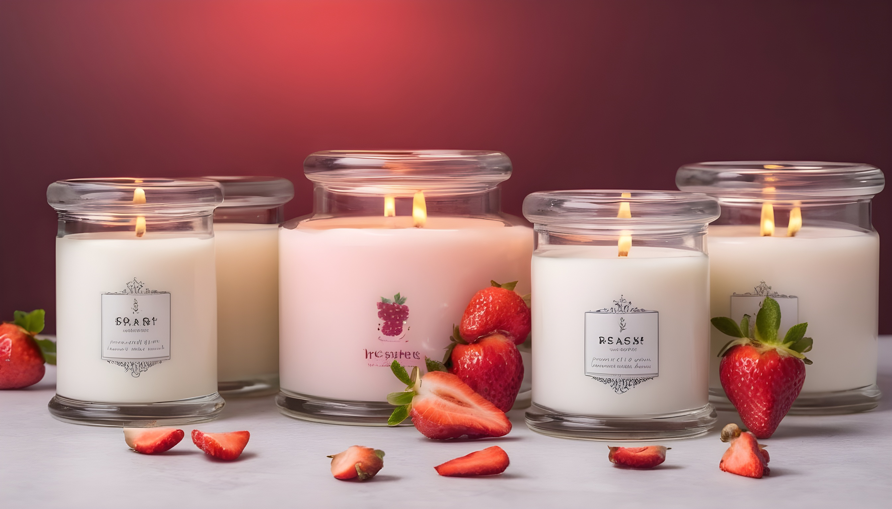
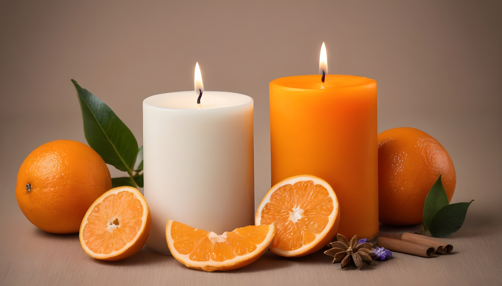

Encontrarás una amplia selección de velas aromáticas en nuestro local. Desde velas clásicas en forma de vasos de cristal hasta velas en tarros con tapa, cada una de nuestras velas está diseñada cuidadosamente para brindarte una experiencia visual y olfativa excepcional. Además, ofrecemos una variedad de aromas, desde cítricos y florales hasta maderas y especias, para que puedas encontrar el aroma perfecto que se adapte a tus gustos y preferencias.
| HERVALES | FRUTALES |
|---|
Aroma a Canela La canela se utiliza para disminuir la fatiga y el estrés. También se le atribuyen propiedades afrodisíacas y estimulantes mentales. |
 | Aroma a manzana: El aroma a manzana es fresco y frutal. Puede proporcionar una sensación de calma y relajación. |
|
|  | Aroma a Lavanda La lavanda es conocida por sus propiedades relajantes y su capacidad para eliminar la ansiedad y el estrés. Se utiliza ampliamente en aromaterapia para despejar las mentes cansadas |
 | Aroma a fresa: El aroma a fresa es dulce y jugoso. Puede evocar sentimientos de alegría y felicidad. |
Aroma a Manzanilla La manzanilla es conocida por sus propiedades calmantes y relajantes. Se utiliza para aliviar el estrés y la ansiedad, y se dice que ayuda a despejar la mente. |
 | Aroma a naranja: El aroma a naranja es fresco y cítrico, y puede proporcionar una sensación de energía y vitalidad. |